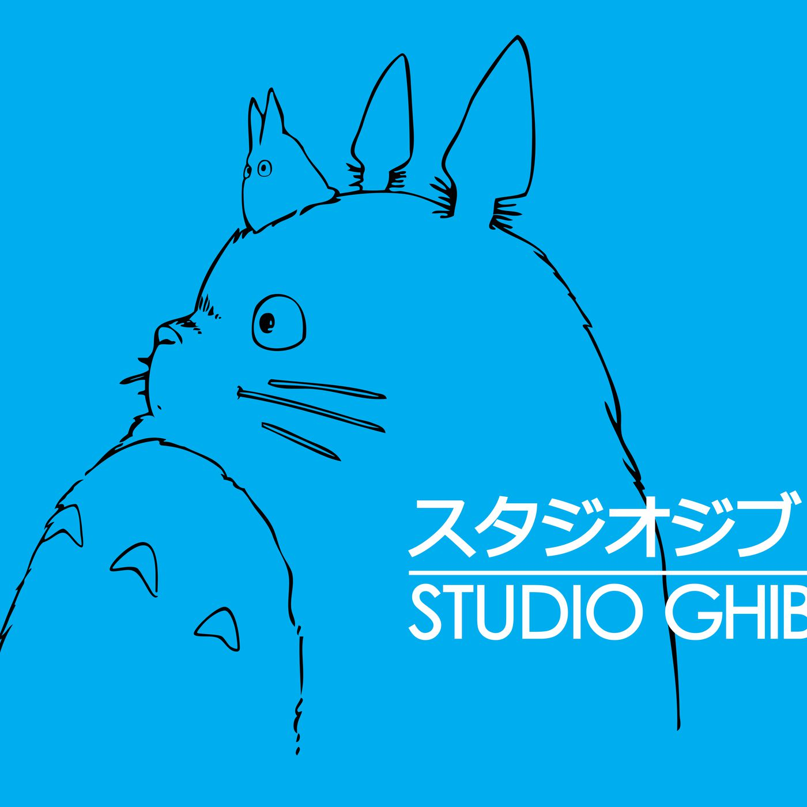
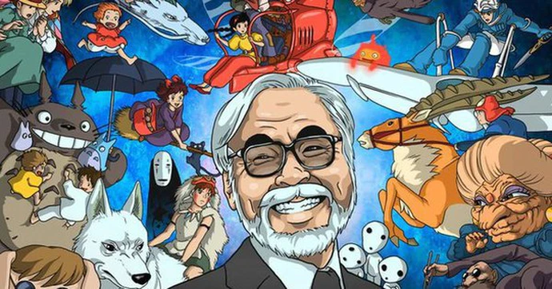

Studio Ghibli, acclaimed Japanese animation film studio that was founded in 1985 by animators and directors Miyazaki Hayao and Takahata Isao and producer Suzuki Toshio. Studio Ghibli is known for the high quality of its filmmaking and its artistry. Its feature films won both critical and popular praise and influenced other animation studios. The headquarters are in Tokyo.
In 1984 Miyazaki made his second feature film, Kaze no tani no Naushika (Nausicaä of the Valley of the Wind), which was based on his own popular manga strip, and the following year Miyazaki, Takahata, and Suzuki established Studio Ghibli. The first official Studio Ghibli release was Tenkū no shiro Rapyuta (1986; Castle in the Sky). Most of the films produced by Studio Ghibli were written and directed by Miyazaki and include, in addition to the aforementioned, Tonari no Totoro (1988; My Neighbor Totoro), Majo no takkyūbin (1989; Kiki’s Delivery Service), and Kurenai no buta (1992; Porco Rosso).
After Nausicaä of the Valley of the Wind was badly edited for release in the United States under the name Warriors of the Wind (1986), Miyazaki did not allow his films to be released in the West for many years. In 1996, however, a deal was reached to allow Walt Disney Studios to distribute Studio Ghibli’s movies, with the caveat that no film editing was to take place. The following year Studio Ghibli issued Miyazaki’s blockbuster hit Mononoke-hime (Princess Mononoke).
The studio’s best-known movie, Sen to Chihiro no kamikakushi (2001; Spirited Away), won several awards, notably the Golden Bear at the 2002 Berlin International Film Festival and the 2003 Academy Award for best animated feature. Later films included Hauru no ugoku shiro (2004; Howl’s Moving Castle), Gake no ue no Ponyo (2008; Ponyo), Kaze tachinu (2013; The Wind Rises), and Kaguyahime no monogatari (2013; The Tale of the Princess Kaguya). In 2001 the Miyazaki-designed Ghibli Museum opened in Mitaka, Japan. Its attractions included exhibits about animation and original short films from Studio Ghibli.